We set up a camera to capture these feathery fellows visiting our hummingbird feeder.
A Female Anna’s (left) and Male Rufus (right) at our feeder
We trained a classifier to detect who’s who….
And we’re even able to keep track of when the feeder needs a refill!
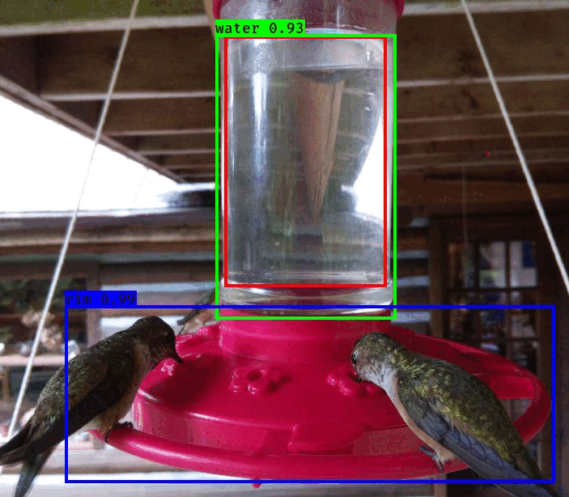
But we’ll save the details for a future blog post 😄
For now, lets dive in to some of the data we’ve collected!
Setup
We’ll read in our data: weather from our weather station, and the classifier output as well as bounding boxes of detected birds.
Code
library(tidyverse)library(lubridate)library(patchwork)library(ggpubr)#weather <- read_csv('https://github.com/teaswamp-creations/galiwatch.ca/raw/quarto-website/posts/hummer-watch/WS_hours.csv') %>%weather <-read_csv('WS_hours.csv') %>%# retain only non-duplicatesdistinct() %>%# Clean up timestamps, convert to celsiusmutate(Date =ymd(Date), MergeTime =ymd_hms(paste(Date, Time)),`Temp C`= (`Outdoor Temperature F`-32) * (5/9) )# classifier labelsclasses =c('Rufous_Male', 'Annas_Male', 'Person', 'Annas_Female', 'Rufous_Female')# read in bird detection data, and do some basic data cleaning#bird <- read_csv('https://raw.githubusercontent.com/teaswamp-creations/galiwatch.ca/quarto-website/posts/hummer-watch/2021_reprocessed_hummers_combo_2023.csv') %>% bird <-read_csv('2021_reprocessed_hummers_combo_2023.csv') %>%# lookup labelsmutate(class = classes[label +1]) %>%# put columns into tidy formatseparate(class, into=c('Species', 'Sex'), sep='_') %>%separate(image, into=c('Date', 'image'), sep="_", remove = F) %>%separate(image, into=c('hhmm'), sep=".jpg", extra ='drop') %>%# clean up timestampsmutate(Timestamp =ymd_hm(paste(Date, hhmm))) %>%# remove peoplefilter(label !=2) %>%# change column types, correct for variable image sizemutate(Date=ymd(Date),Month=factor(month(Date, label = T)),Hour=hour(Timestamp),Species =ordered(Species),Sex =factor(Sex),ymin2 = ymin,ymin = (y_size - ymax),ymax = (y_size - ymin2),MergeTime =floor_date(Timestamp, 'hour') ) %>%# correct for variable image sizemutate(ymin =ifelse(y_size ==420, ymin * (616/420), ymin),ymax =ifelse(y_size ==420, ymax * (616/420), ymax),xmin =ifelse(y_size ==420, xmin * (616/420), xmin),xmax =ifelse(y_size ==420, xmax * (616/420), xmax), )
Lets take a peek at the data. The air quality measures show the concentration of particulates at three different size thresholds (in micrometers), as well as the outdoor air temperature recorded from April - December 2021.
Code
knitr::kable(head(weather))
Date
Time
Indoor Temperature F
Indoor Humidity %
Outdoor Temperature F
Outdoor Humidity %
Wind Speed(mph)
wind direction(Degree)
Light Intensity
UV index
Daily Rainfall accumulation
Total Accumulative Rainfall
Strike Count now
Daily Strike Count
Total Strike Count
Closet Strike distance
Interference
barometric Pressure(real)
Calibrated barometric Pressure
Dew Point
Rain Rate
wind gust
Wind Speed average
Feels like
Heat Index
Wind Chill
…27
MergeTime
Temp C
2021-02-14
19:00:00
62
51
60.7
47
0
93
0
0
0
0
–
–
–
0
–
29.62
29.91
38
0
0
0
58
–
–
NA
2021-02-14 19:00:00
15.94444
2021-02-14
20:00:00
63
51
62.8
48
0
93
0
0
0
0
–
–
–
0
–
29.59
29.89
42
0
0
0
61
–
–
NA
2021-02-14 20:00:00
17.11111
2021-02-14
21:00:00
66
50
68.7
46
0
99
0
0
0
0
–
–
–
0
–
29.58
29.89
46
0
0
0
67
–
–
NA
2021-02-14 21:00:00
20.38889
2021-02-14
22:00:00
67
51
72.0
42
0
99
0
0
0
0
–
–
–
0
–
29.58
29.90
47
0
0
0
71
–
–
NA
2021-02-14 22:00:00
22.22222
2021-02-14
23:00:00
67
51
72.1
42
0
99
0
0
0
0
–
–
–
0
–
29.56
29.88
47
0
0
0
71
–
–
NA
2021-02-14 23:00:00
22.27778
2021-02-15
00:00:00
67
51
72.8
41
0
99
0
0
–.–
0
–
–
–
0
–
29.54
29.87
46
0
0
0
72
–
–
NA
2021-02-15 00:00:00
22.66667
The bird detector gives us the the bounding box of each bird in an image, and the predicted sex and species of the bird. Note that because it’s hard to distinguish female birds from the immature males, there are likely some which are misclassified.
Code
knitr::kable(head(bird))
xmin
Date
hhmm
ymin
xmax
ymax
label
confidence
x_size
y_size
Mo
OK
Species
Sex
Timestamp
Month
Hour
ymin2
MergeTime
154
2021-04-20
1651
102
331
251
0
0.8494033
820
616
04
1
Rufous
Male
2021-04-20 16:51:00
Apr
16
365
2021-04-20 16:00:00
200
2021-04-20
1706
138
406
234
0
0.8925107
820
616
04
1
Rufous
Male
2021-04-20 17:06:00
Apr
17
382
2021-04-20 17:00:00
634
2021-04-20
1718
64
814
215
0
0.9755894
820
616
04
1
Rufous
Male
2021-04-20 17:18:00
Apr
17
401
2021-04-20 17:00:00
164
2021-04-20
1914
109
368
227
0
0.6146710
820
616
04
1
Rufous
Male
2021-04-20 19:14:00
Apr
19
389
2021-04-20 19:00:00
196
2021-04-20
1925
144
408
227
0
0.9455948
820
616
04
1
Rufous
Male
2021-04-20 19:25:00
Apr
19
389
2021-04-20 19:00:00
177
2021-04-20
1942
77
378
214
0
0.9968680
820
616
04
1
Rufous
Male
2021-04-20 19:42:00
Apr
19
402
2021-04-20 19:00:00
Preliminaries
Number of birds by species
Our bird detector ID’d lots of visitors! Each ID represents a bird captured in an image, and not necessarily an individual. The images are captured once every minute, so if for example a single bird sat at the feeder for two minutes in a row, it would get counted twice. There may be multiple birds in a single image.
Each bird ID is made by picking the the most likely label, based on the prediction probability. Sometimes, the classifier isn’t as confident as others. For example, it may be harder to identify a bird that is facing away from the camera. We can plot the confidences, and see which birds are the hardest to label.
Code
bird %>%gghistogram(x ='confidence', fill ='Species', color='Species', bins=100,facet.by ='Sex', scales ='free_y', alpha=1, position='stack') +labs(title ='Prediction for females may be better calibrated',subtitle ='Higher proportion of low-confidence IDs for males vs females of both species', x ='Prediction confidence', y ='Number of IDs') +theme(legend.position ='right') +scale_fill_manual(values=c('chartreuse3', 'chocolate2')) +scale_colour_manual(values=c('chartreuse3', 'chocolate2'))
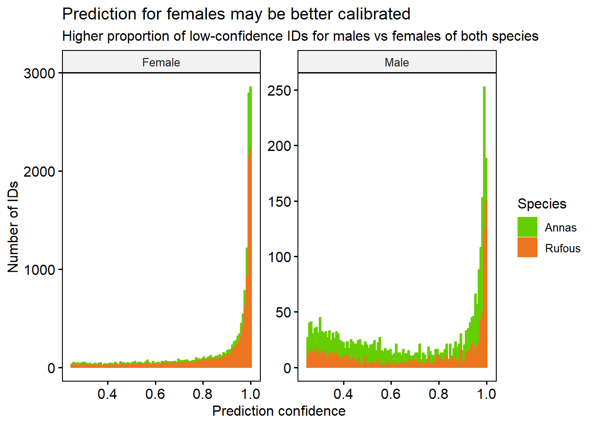
It looks like for both species, Male birds are slightly harder to identify with high confidence than Female. This might be explained by the fact that there are many more Female examples than Male in our data.
There is almost certainly some mistakes in our classifier, including false positives (non-birds labeled as birds) and false negatives (birds mistakenly labeled)
To help make sure we’re only considering high-quality calls, we’ll pike a confidence threshold and only analyse the IDs above that level.
Number of birds after filtering
We manually looked at the images, and found that that almost all the Rufouses after September 1st are false positives, so we’ll remove these observations. Also, since we have very few IDs in October, we will drop this month from our data. Then, we’ll filter to only retain the high-confidence (> 0.7 prediction probability) bird IDs
Lastly, we’ll sanity check the bounding boxes for their size.
Code
bird <- bird %>%mutate(Height = ymax-ymin, Width = xmax-xmin, Area = Height * Width )bird %>%gghistogram(x="Area", bins =100) +labs(title ='There are some very small and some very large bounding boxes.',subtitle ="Note also relative raity of areas at 25,000 and 50,000 pixels", y ='Count')
This distribution more or less makes sense, we see some very small bounding boxes which may be mis-calls or birds who are only half in the image. There are also some cases where a bird is partially obscured because it’s sitting behind the feeder. There are some very large bounding boxes also. I’m not sure exactly whether these are real, giant humming birds, or some kind of artifact. We’ll drop the smallest and largest 1% of bounding boxes just in case.
Code
bird <- bird %>%filter(Area >quantile(bird$Area, 0.01) & Area <quantile(bird$Area, 0.99))
Note that because of the camera perspective, bounding box area will be affected by not only the bird size, but also its closeness to the camera.
The dips we see around 25,000 and 50,000 bounding box size are surprizing, this means that there are certain height/width combinations that are not being picked up very much. This could be indicating that there are certain positions on the feeder at which we can’t effectively identify birds.
We see this even more clearly by plotting bird height against width.
Code
bird %>%ggscatter(x ="Width", y ="Height", add ="reg.line", alpha =0.2, add.params =list(color ="black", fill ="lightgray")) +stat_cor(label.x =25, label.y =400) +stat_regline_equation(label.x =25, label.y =380) +labs(title ='Some height/width combinations are missing')
`geom_smooth()` using formula = 'y ~ x'
There’s some height/widths with no birds observed at them! To check whether this may be related to out classifier’s ability to call these birds, we can colour this plot by the confidence level (recall: we already filtered the data such that all ID’s have confidence > 0.7).
Code
bird %>%mutate(confidence_lvl =cut(confidence, c(0.6, 0.7, 0.8, 0.9, 1), ordered_result=T)) %>%ggscatter(x ="Width", y ="Height", add ="reg.line", alpha =0.4, color='confidence_lvl',add.params =list(color ="black", fill ="lightgray", linetype='dashed')) +stat_cor(label.x =25, label.y =400) +stat_regline_equation(label.x =25, label.y =380) +labs(title ='Missing height/widths may be caused to hard-to call birds',colour ='Confidence Level')
`geom_smooth()` using formula = 'y ~ x'
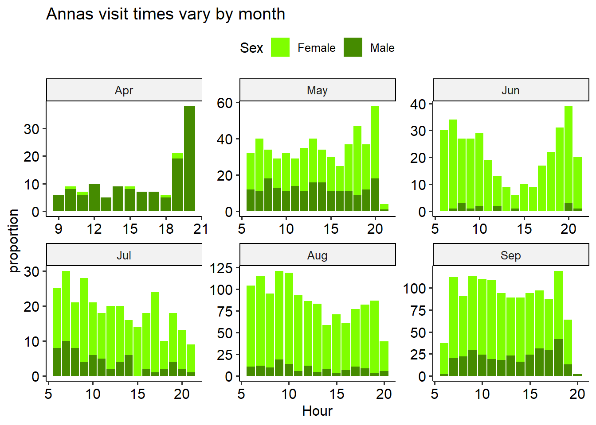
We can see that at least some of these “holes” seem to be associated with lower-confidence IDs, which is consistent with the hypothesis that they’re indicative of missing IDs from hard-to-call birds.
Here’s how many IDs we’re left with after that data cleaning:
The Anna and Rufous hummingbirds have two quite distinct migration patterns: Annas are year-round visitors to our feeder in BC, while the Rufouses tend to leave for Mexico about half way through the summer.
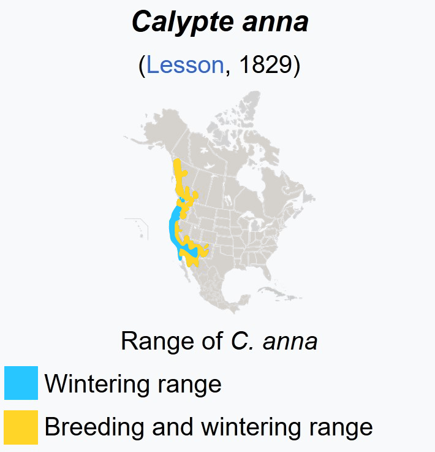
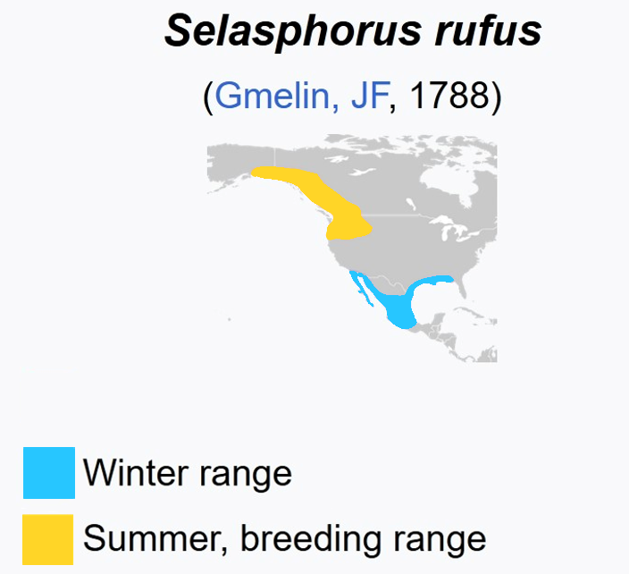
Adapted from Wikipedia
Visit patterns over the summer
Code
p1 <- bird %>%ggplot() +aes(x = Date, fill = Species) +geom_histogram(bins=100, position='dodge') +labs(y='Number of IDs', x='', title='Rufous Migrates Away in July',subtitle ='Annas are present in BC year-round') +scale_fill_manual(values=c('chartreuse3', 'chocolate2')) +#facet_wrap('~Species') +theme_pubr() p2 <- bird %>%ggplot() +aes(x = Date, fill = Species, y=after_stat(count)) +geom_density(bw=10, position='fill', show.legend = F, colour =NA) +labs(y='Proportion of IDs') +scale_fill_manual(values=c('chartreuse3', 'chocolate2'))+theme_pubr()(p1 / p2)
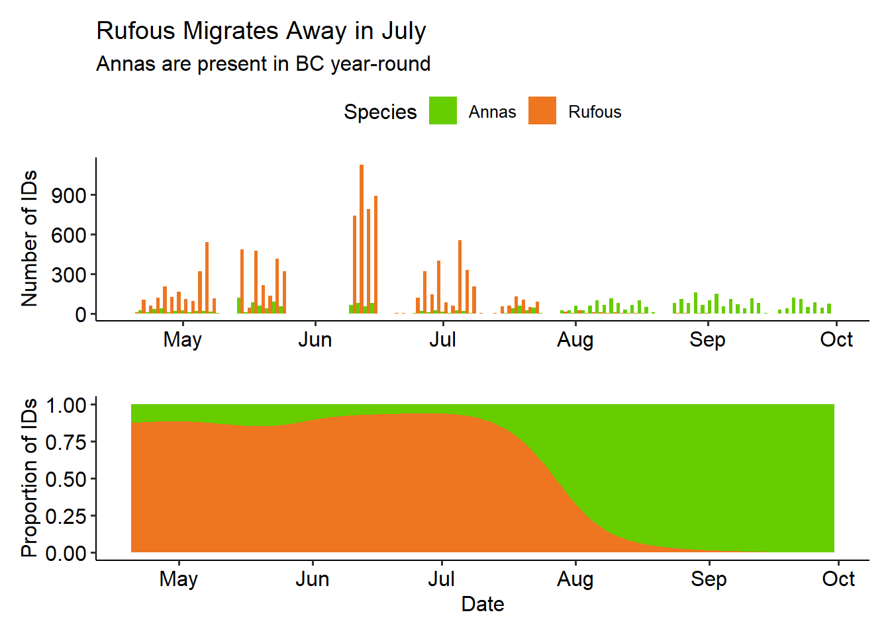
The Male Rufous leave earlier than the Female: they’re almost all gone by July. The latest dates we have for manually confirmed Rufous visits are:
The Annas on the other hand, seem to hover around 1:3 Male to Female ID ratio. Except for in April, which may have to do with nesting? We’re not certain.
Visiting Hours
Code
bird %>%filter(Species =='Rufous') %>%filter(Date <ymd('2021-08-01')) %>%ggplot(aes(x=Hour, fill = Sex)) +geom_bar(position ='stack') +facet_wrap("~Month", scales='free') +scale_fill_manual(values=c('chocolate1', 'chocolate4')) +labs(title='Rufous visit times vary by month', y ='Number of IDs') +theme_pubr()
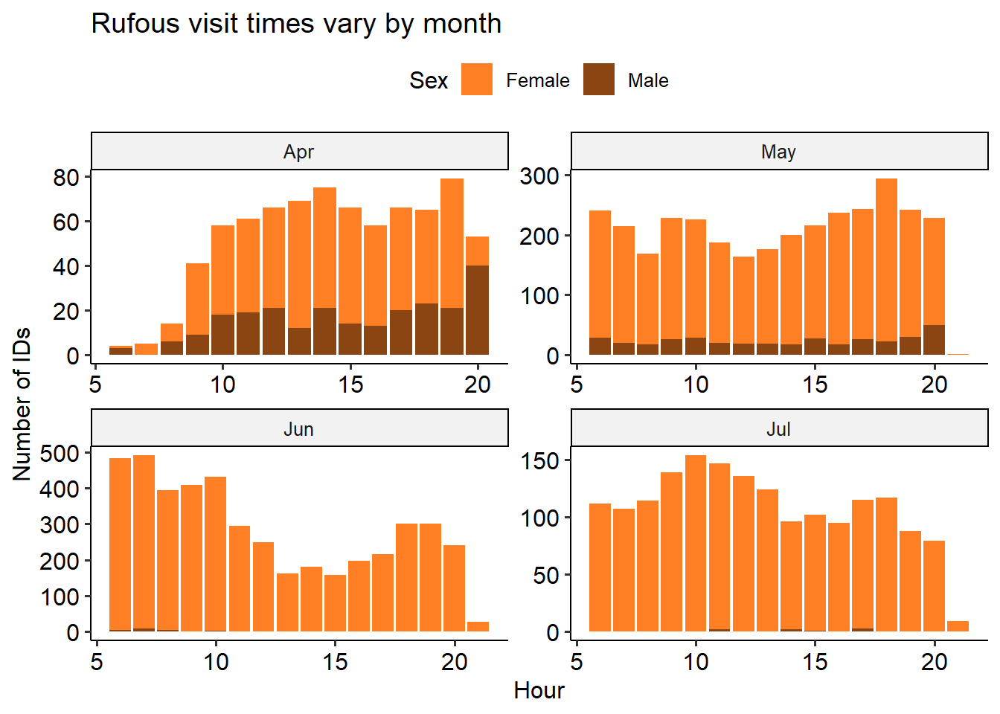
Code
bird %>%filter(Species =='Annas') %>%ggplot(aes(x=Hour, fill = Sex)) +geom_bar(position='stack') +facet_wrap("~Month", scales='free') +scale_fill_manual(values=c('chartreuse1', 'chartreuse4')) +labs(title='Annas visit times vary by month', y ='Number of IDs') +theme_pubr()
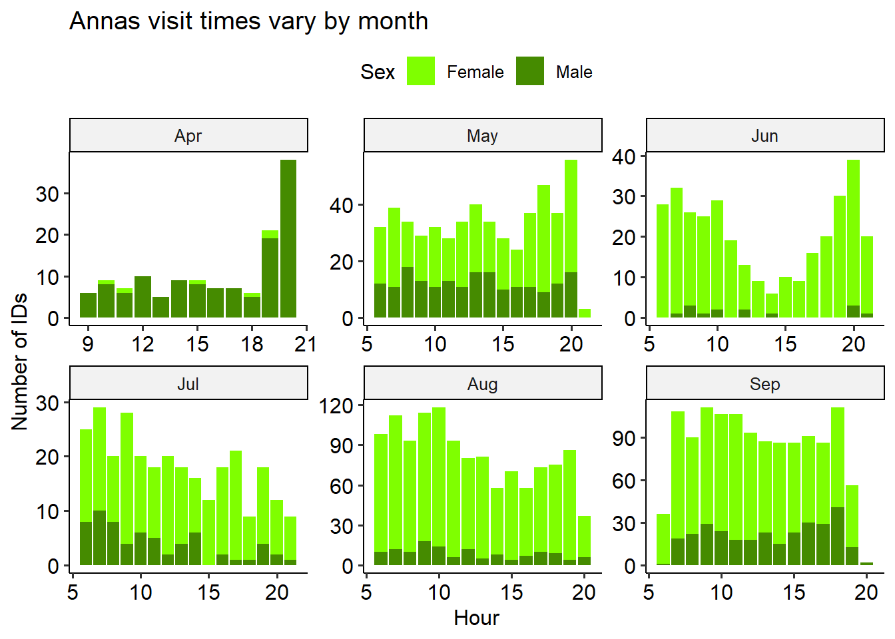
Since we see a big dip in visits in the middle of the day in both species in June, I wondered if the birds were avoiding the midday heat. This was an especially hot month for 2021, and there were lots of forest fires
Temperature preferences
Based on the visiting hours plots, it seems like there may be a temperature effect in play, especially in June. To look into this, we can
Code
p <-merge(bird, weather, all.x=T) %>%mutate(cat =paste(Species, Sex)) %>%group_by(Month, Hour, cat) %>%summarise(n=n(), `Average Temp C`=mean(`Temp C`, na.rm=T), .groups='drop') %>%ggballoonplot(x ='Hour', y ='Month', size ='n', size.range =c(0,8),color='Average Temp C', fill='Average Temp C', facet.by ='~cat') +theme_pubr() +theme(legend.position ='right') +labs(size='Number of IDs', title ='Females avoid the midday heat in summer?')g <-ggplot_gtable(ggplot_build(p))strips <-which(grepl('strip-', g$layout$name))b_pal <-c('chocolate1', 'chocolate4', 'chartreuse1', 'chartreuse4')t_pal <-c('black', 'white', 'black', 'white')for (i inseq_along(strips)) { k <-which(grepl('rect', g$grobs[[strips[i]]]$grobs[[1]]$childrenOrder)) l <-which(grepl('titleGrob', g$grobs[[strips[i]]]$grobs[[1]]$childrenOrder)) g$grobs[[strips[i]]]$grobs[[1]]$children[[k]]$gp$fill <- b_pal[i] g$grobs[[strips[i]]]$grobs[[1]]$children[[l]]$children[[1]]$gp$col <- t_pal[i]}plot(g)
`summarise()` has grouped output by 'Month', 'Species'. You can override using
the `.groups` argument.
Code
merge(bird, weather, all.x=T) %>%ggplot(aes(x=`Temp C`, fill=factor(label))) +geom_histogram(data = weather_bg, fill ="grey") +geom_histogram(show.legend = F, alpha = .3, aes(color =factor(label))) +facet_grid(Species + Sex~ Month, scales="free_y") +scale_fill_manual(values=c('chocolate4', 'chartreuse4', 'chartreuse1', 'chocolate1')) +scale_colour_manual(values=c('chocolate4', 'chartreuse4', 'chartreuse1', 'chocolate1')) +theme_pubr() +labs(title='Number of bird IDs doesn\t appear to be particularly\nover- or under- represented at any temperature', y='Number of IDs',subtitle ='Background distribtion of temperatures for each month shown in grey,\nresampled for comparison in each row')
Warning: Combining variables of class <ordered> and <ordered> was deprecated in ggplot2
3.4.0.
i Please ensure your variables are compatible before plotting (location:
`combine_vars()`)
Warning: Combining variables of class <factor> and <ordered> was deprecated in ggplot2
3.4.0.
i Please ensure your variables are compatible before plotting (location:
`combine_vars()`)
Warning: Combining variables of class <ordered> and <factor> was deprecated in ggplot2
3.4.0.
i Please ensure your variables are compatible before plotting (location:
`combine_vars()`)
Warning: Combining variables of class <ordered> and <factor> was deprecated in ggplot2
3.4.0.
i Please ensure your variables are compatible before plotting (location:
`join_keys()`)
`stat_bin()` using `bins = 30`. Pick better value with `binwidth`.
`stat_bin()` using `bins = 30`. Pick better value with `binwidth`.
bird %>%group_by(Date, Month =factor(month(Timestamp, label=T)), Hour=hour(Timestamp), Species, Sex) %>%summarise(n=n(), .groups='keep') %>%group_by(Month, Hour, Species, Sex,.groups='keep') %>%summarize(mean_n =mean(n)) %>%ggplot(aes(x=Hour, y = mean_n, colour = Month)) +geom_point() +geom_line() +facet_grid(rows =vars(Species), cols =vars(Sex), scales ='free')+labs(y='average number of IDs per day')
Code
bird %>%mutate(Hour =hour(Timestamp), Month =factor(month(Timestamp, label=T))) %>%group_by(Month, Hour, Species, Sex) %>%summarise(n=n()) %>%ggplot(aes(x = Hour, y = Month, fill=Month, color =Month)) + ggridges::geom_density_ridges(alpha=0.2) +facet_grid(rows =vars(Species), cols =vars(Sex))bird %>%mutate(Hour =hour(Timestamp), Month =factor(month(Timestamp, label=T))) %>%ggplot() +aes(x=Hour, fill=Month) +geom_bar() +theme_pubr() +theme(legend.position ='right') +facet_wrap('~Species', scale='free') +labs(x ='Hour of Day', y ='Count', title ='Daylight changes over the months!')
Distribution of sitting spots
We can plot the location of where each bird sits, with the proxy that a birds’ feet will be at the center bottom of its bounding box. The birds appear to mostly sit in a circle, around the rim of the feeder. This makes sense, as it gives the best access to the sugar water.
Code
bird %>%mutate(xmid = (xmax+xmin)/2,ymid = (ymax+ymin)/2) %>%ggscatter(x='xmid', y ='ymid', alpha=0.5)
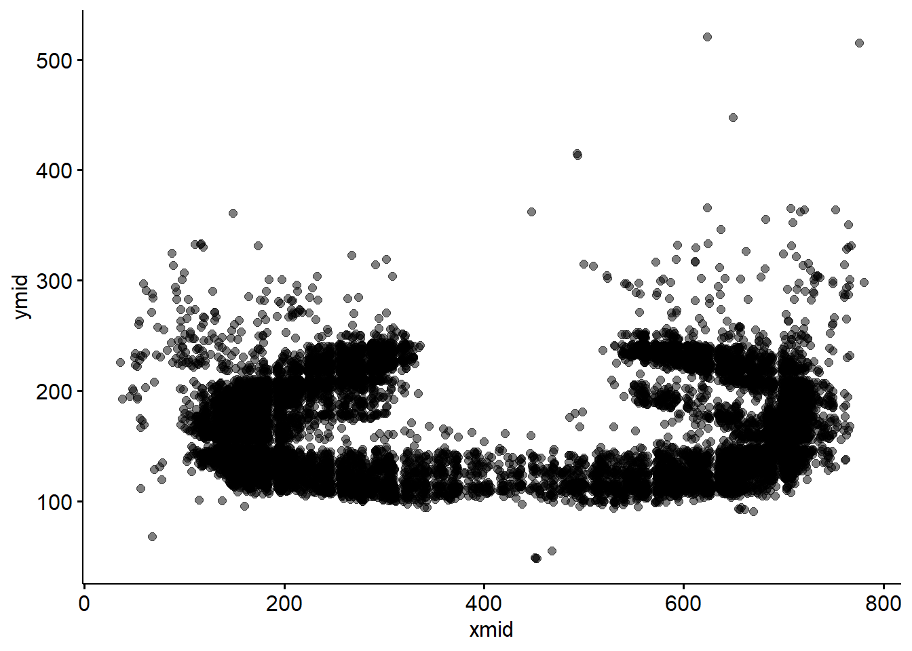
However, it looks like there are 3 distinct positions that the feeder was in over the summer. We’ll try to do batch correction for this, by assigning a batch number to each position, and subtract the average from the x and y direction. I think we can reasonably split the changes in position (the batches) simply by the date. This is easy to see in the ymid variable - the feeder moves twice around May 8th, and back down half way through the day on June 13th.
Code
bird %>%mutate(ymid = (ymax+ymin)/2, Month =month(Date, label=T)) %>%filter(Date>'2021-05-01'& Date<'2021-06-15') %>%ggplot(aes(x=Timestamp, y = ymid))+geom_jitter(alpha =0.5) +facet_wrap("~Month", scales ='free_x') +theme_pubr() +labs(title ='Feeder Moves Up in May, Down in June')
We can check it went as expected by recolouring the previous plot by batch
Code
bird %>%mutate(Month =month(Date, label=T)) %>%mutate(xmid = (xmax+xmin)/2, ymid = (ymax+ymin)/2) %>%filter(Date>'2021-05-01'& Date<'2021-06-15') %>%ggplot(aes(x=Timestamp, y = ymid, color=batch))+geom_point(alpha =0.5) +facet_wrap("~Month", scales ='free_x') +theme_pubr() +labs(title ='We can Infer Position Batches Based on When the Feeder Moves',colour ='Batch')
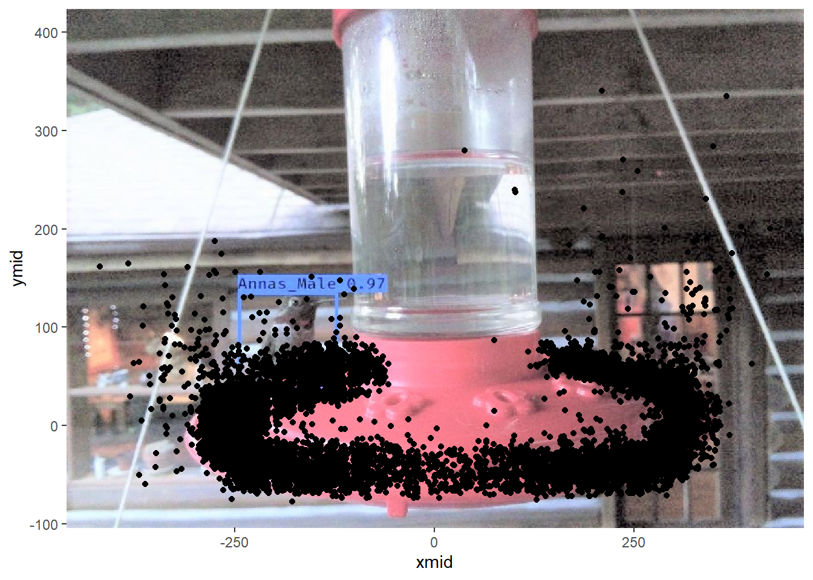
Now we’re ready to correct! We’ll transform all the x- and y- values by subtracting the average of each batch. This will yield a new positioning relative to the middle of the feeder; we can no longer interpret this as the pixel index in the image.
We can see that the correction didn’t completely fix things - our points are still offset by batch!
Code
bird_c %>%ggscatter(x='xmid', y ='ymid', alpha=0.1, color ='batch') +labs(title ='Batches don\'t perfectly overlap', fill ='Batch')
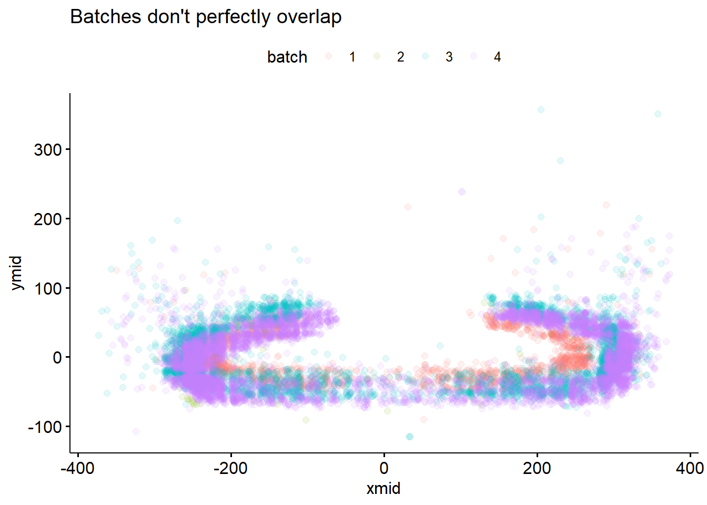
It’s a little hard to see in the scatter plot, but when we plot the density of points, it becomes apparent that we should be correcting for the perspective ‘stretch’ that happens when the feeder is in a different postion in the image.
Code
bird_c %>%ggplot(aes(x=xmid, y=ymid) ) +stat_density_2d(aes(fill=batch), geom ="polygon", alpha=0.2) +theme_pubr() +labs(title ='Density doesn\'t match after position correction',subtitle ='We still need to correct for perspective scaling', fill ='Batch')
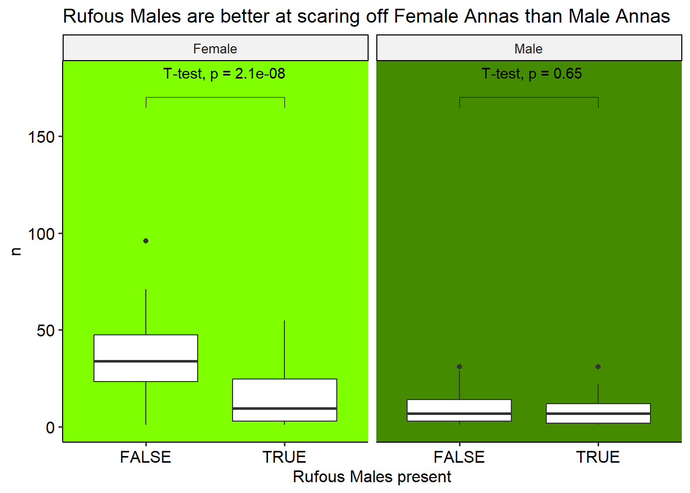
The position correction didn’t work perfectly, because there is some perspective disortion in the images. In theory, we could potentially calculate the effect of perspective, but we’d probably need to know things like how far away the feeder is from the camera, etc. For our purposes, it’s probably acceptable to just add a scaling factor to the x- and y- directions and leave it at that. We could try to use QQ matching, or something like gradient descent to minimize the distance between our batch distributions. Instead, I’m just going to eyeball it.
I picked a scaling coefficient for each batch (using batch 4 as my reference because it’s the largest) by trial and error.
This isn’t an ideal approach, and if we dig into the different distributions of xmin/xman and ymin/ymax, we can see that the assumptions we made based on the xmid/ymid values don’t really extend to the min/max values. In a future version of this analysis, we could use the detection information for feeder location and shape, but for now we can proceed with this eyeballed version.
The batch lineup looks a lot better for both the scatterplot, and densities in any case!
# # how to make circle plot: pick center of box, plot x/y# most interested in feet: on the left - feet are on the left. # if you're on the right, your feet are on the right. Could probably pick the center# change female -> female + immature malebird %>%mutate(xmid = (xmax+xmin)/2, ymid = (ymax+ymin)/2) %>%mutate(Width = xmax - xmin, Height = ymax - ymin) %>%ggplot() +aes(x=xmid, y = Width, xmax, colour = Sex) +geom_point(alpha =0.5) +facet_wrap(~Species) +labs(title ='Birds are wider on the sides of the feeder (profile view?)')bird_c %>%mutate(xmid = (xmax+xmin)/2, ymid = (ymax+ymin)/2) %>%mutate(Width = xmax - xmin, Height = ymax - ymin) %>%ggplot(alpha =0.5) +aes(x=ymid, y = Height, xmax, colour = Sex) +geom_point() +facet_wrap(~Species) +labs(title ='Birds are taller near the top of the image')bird_c %>%mutate(xmid = (xmax+xmin)/2, ymid = (ymax+ymin)/2) %>%mutate(Width = xmax - xmin, Height = ymax - ymin) %>%ggplot(alpha =0.5) +aes(x=xmid, y = Height, xmax, colour = Sex) +geom_point() +facet_wrap(~Species) +labs(title ='Annas are taller (and don\'t get captured sitting in the horizontal middle?)')bird_c %>%mutate(xmid = (xmax+xmin)/2, ymid = (ymax+ymin)/2) %>%mutate(Width = xmax - xmin, Height = ymax - ymin) %>%ggplot(alpha =0.5) +aes(x=ymid, y = Width, xmax, colour = Sex) +geom_point() +facet_wrap(~Species) +labs(title ='Widest Rufous are in the (vertical) middle, widest Anna are near the top')bird_c %>%mutate(xmid = (xmax+xmin)/2, ymid = (ymax+ymin)/2) %>%mutate(Width = xmax - xmin, Height = ymax - ymin) %>%ggplot(alpha =0.5) +aes(x=xmid, y = ymid, xmax, colour = Sex) +geom_point() +facet_wrap(~Species) +labs(title ='Birds mostly sit on the feeder. There may be one male anna who prefers the deck rail :)')bird_c %>%mutate(xmid = (xmax+xmin)/2, ymid = (ymax+ymin)/2) %>%mutate(Width = xmax - xmin, Height = ymax - ymin) %>%ggplot(alpha =0.5) +aes(x=Width, y = Height, xmax, colour = Sex) +geom_point() +facet_wrap(~Species) +labs(title ='Wider birds are generally taller birds')
Code
# number of birds per day bird_c %>%group_by(Date, Species, Sex) %>%summarise(n=n(), `Temp C`=max(`Temp C`), .groups='keep') %>%ggplot() +aes(x = Date, y = n, fill = Sex) +geom_bar(stat ='identity') +facet_wrap(~Species) +labs(y ='Number of bird visits', title ='Most Rufous visit in Summer, Female Annas visit in Fall,\nMale Annas are year-round')# Not really what happenedbird_c %>%group_by(Date, Species, Sex) %>%summarise(n=n(), `Temp C`=max(`Temp C`), .groups='keep') %>%ggplot() +aes(x = n, y =`Temp C`, colour = Sex) +geom_point() +geom_smooth(method ='lm', formula ='y~x', se = F, linetype='dashed') +facet_wrap(~Species, scales ='free_x') +labs(x ='Number of bird visits', title ='Everyone except Female Annas prefers lower temperatures')
Number of birds in an image for each class
Rufous males can be very territorial. We’d like to know whether we can see evidence of the “chasing away” behaviour.
If this is the case, then the disappearance of the male rufous should lead to an increase in the absolute number of Annas who come (but might not affect the number of female rufous. And the later disappearance of the female rufous should also lead to an increase in the number of Annas.
Because it’s hard to see this on a minute-to-minute basis, we’ll summarize the number of Anna visits by day.
Code
# total number of birds per daybird %>%filter(Species=='Annas') %>%mutate('Rufous Males present'= Date <ymd('2021-07-31')) %>%group_by(Date,`Rufous Males present`, Sex, .groups='keep') %>%summarize(n=n()) %>%ggplot(aes(x=`Rufous Males present`, y = n)) +geom_rect(aes(fill = Sex),xmin =-Inf,xmax =Inf, ymin =-Inf,ymax =Inf, show.legend = F) +geom_boxplot() +facet_wrap("~Sex") +stat_compare_means(method ="t.test", label.y =180, label.x =1.3) +geom_bracket(xmin =1, xmax =2, label ='', y.position =c(170)) +theme_pubr() +labs(title='Rufous Males are better at scaring off Female Annas than Male Annas') +scale_fill_manual(values =c('chartreuse1', 'chartreuse4'))# average number of birds per image per daybird %>%filter(Species=='Annas') %>%mutate('Rufous Males present'= Date <ymd('2021-07-31')) %>%group_by(Date,`Rufous Males present`, Timestamp, Sex, .groups='keep') %>%summarize(n=n()) %>%group_by(Date, `Rufous Males present`, Sex) %>%summarize(n=mean(n), .groups ='keep') %>%ggplot(aes(x=`Rufous Males present`, y = n)) +geom_rect(aes(fill = Sex),xmin =-Inf,xmax =Inf, ymin =-Inf,ymax =Inf, show.legend = F) +geom_boxplot() +facet_wrap("~Sex") +stat_compare_means(method ="t.test", label.y =1.41, label.x =1.3) +geom_bracket(xmin =1, xmax =2, label ='', y.position =1.4) +theme_pubr() +labs(title='Rufous Males are better at scaring off Female Annas than Male Annas') +scale_fill_manual(values =c('chartreuse1', 'chartreuse4'))bird %>%group_by(Date, Timestamp, Species, .groups='keep') %>%summarize(n=n()) %>%#group_by(Date, Species) %>%#summarize(n=mean(n), .groups = 'keep') %>%ggplot(aes(x=factor(Date), y = n, colour=Species)) +geom_point()+geom_smooth(aes(colour =Species), method='lm', formula='y~poly(x,4)')bird %>%#filter(Species=='Annas') %>%mutate('Rufous Males present'= Date <ymd('2021-07-31')) %>%group_by(Date, `Rufous Males present`, Species, Sex) %>%summarize(n=n()) %>%ggplot(aes(x=`Rufous Males present`, y = n)) +geom_boxplot() +facet_grid(rows =vars(Species), cols =vars(Sex), scales='free')